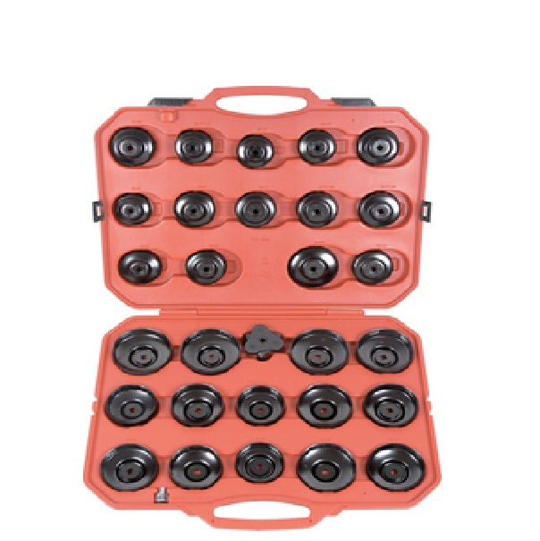

Описание товара
Набор укомплектован чашками для съема и установки масляного фильтра.
Инструменты в комплекте предназначены для работы с квадратом 3/8" и 1/2".
С помощью элементов этого набора можно снимать и устанавливать
масляные фильтры, не повреждая их.

Применимость по маркам а/м:
- 65 мм (2-9/16") - 14 граней - Fiat, Champ, Hastings, GM/Ac, Wix, Napa, Purolator, Diahatsu, Toyota, Nissan;
- 65-67 мм (2-9/16" - 2/21/32") - 14 граней - Daihatsu,Toyota;
- 68 мм (2-11/16") - 14 граней - Mazda, Ford Escort, Capri, Subaru, Fran PH6607, Motorcraft FL816;
- 73 мм (2-7/8") - 14 граней - Toyota/Lexus;
- 74 мм (3-29/32") - 15 граней - Audi, GM.Rover. Chrysler;
- 74-76 мм (3-29/32" - 3") 15 граней - Opel, Ford, VW, Audi,Mercedes, Fram, AC, Saturn;
- 75-77 мм (3-15/16" - 3-1/32") - 15 граней - VW, Audi, Casite, GM//AC, Hastings, Wix, NAPA Ford, Isuzu, Mercedes, Opel;
- 76 мм (3") - 12 граней - Fiat (Ducato, Scudo, Ulysee), Renault, (Megane, Laguna, Espace III) Mercedes;
- 76 мм (3") - 14 зубьев - VW, Porsche, Mercedes, Benz, BMW, Audi,(I.B.A3TD) Opel;
- 76 мм (3") - 30 зубьев - Motorcraft FL400A, Ford;
- 76 мм (3") - 8 зубьев - Fiat (z.B. Marea), Lancia (Z.B. Delta);
- 78 мм (3-2/32") - 15 зубьев - Nissan #15205H8991,Ford, Toyota, Accord;
- 80 мм (3-9/64") - 15 зубьев - Fram, Purolator, Nissan, Honda, Motorcraft, Mazda, Isuzu, Subaru, Opel, Toyota;
- 80-82 мм (3-9/64" - 3-7/32") - 15 зубьев – Mazda, Subaru, Toyota, Honda, Acura, Nissan, Napa;
- 86 мм (3-3/8") - 16 граней Volvo (S40, S60, S70, S80);
- 86 мм (3-3/8") - 18 граней – VW Golf (MKIII, Tdi, Passat Tdi,) Audi A6 Tdi, Renault (Clio, Rapid 1.9 D Laguna, Safrane,
Espace 2.1D), Cifroen, Peugeot, Renault;
- 90 мм (3-17/32") - 15 граней Honda Accord, Mitsubishi, Isuzu;
- 92 мм (3-40/64") - 10 граней - Fiat, Panda, Regata, Ritmo Fiat, Seicento, Tempra, Tipo, Lancia (Beta, Dedra, Kappa, Monte Carlo,
Prisma, Thema, Trevi);
- 93 мм (3-12/32") - 15 граней - Casite, Champ, Champion, GM, Fram, Hastings. Opel, Mazada, Volvo, Mitsubishi, Purolator,
Wix, Nissan, VW, Porche, Renault, Ford, Honda. Audi;
- 93 мм (3-21/32") - 36 граней - Motorcraft FL1A, FLA1B, FL300, Fl820, Ford;
- 93 мм (3-21/32") - 45 граней - VW-Audi (Tdi 2.4, 2.6, 2.8 L);
- 95 мм (3-6/8") - 15 граней - Toyota #15600-41010, Alfa, GM, Ford. Alfa, Chrysler;
- 96 мм (3-3/4") - 18 граней - Audi (Air. A6,Tdi), VW (Passat 97 Tdi) Renault (Laguna 2.2d, Safrane 2.2D.Espace 2.2D. 19.Rapid,
Megane, 1.9/2.1D Tdi);
- 100 мм (4") - 15 граней - Fits Fram, Motorcraft, Wix, Isuzu, Mitsubishi;
- 106 мм (4-11/64") - 15 граней Fiat (Ducato 2.5D Td);
- 108 мм (4-8/32") – 15 граней - Volvo(C70, S70,V70 Tdi TD) (Turbo Diesel) 850 Tdi. Diesel);
- 108 мм (4-8/32") – 18 граней - Renault ( Espace , Laguna, Master, Safrane, Traffic 2.4 , 2.5, 2.8D, TD);
- Универсальный ключ масляного фильтра 65-102 мм;
- Переходник адаптер с 1/2" (мама) на 3/8" (папа).
Внимание!
Важно устанавливать масляные фильтры только с соблюдением технических требований
автопроизводителей - контролируя усилие при помощи динамометрического ключа!
Подробное описание товара
Ключи масляного фильтра выполнены в виде крышек, что позволяет снизить вероятность
повреждения маслянного фильтра при его снятии. Данный набор оснащен переходником
с квадрата привода1/2" на 3/8" дюйма. Также в наборе есть универсальный ключ, который
может использоваться под различные фильтра абсолютно разных двигателей. Все ключи
для масляных фильтров изготовлены из высококачественной штамповки, обеспечивающей
на выходе максимальный крутящий момент около 115 Нм.
Состав набора
| № п/п |
Наименование |
Кол-во, шт. |
| Всего предметов: |
30 |
| 1 |
Чашка |
27 |
| 2 |
Краб с тонкими ножками |
1 |
| 3 |
Переходник с кв. 1/2" на кв. 3/8" |
1 |
| 4 |
Кейс пластиковый |
1 |
Вес набора - 7 кг.
Для того, чтобы вернуться в каталог, нажмите здесь